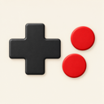
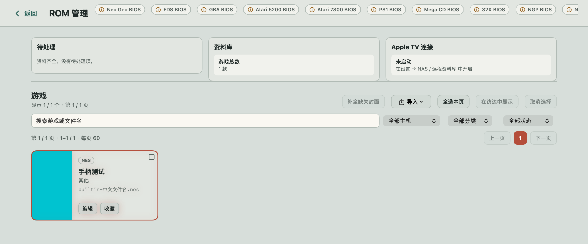
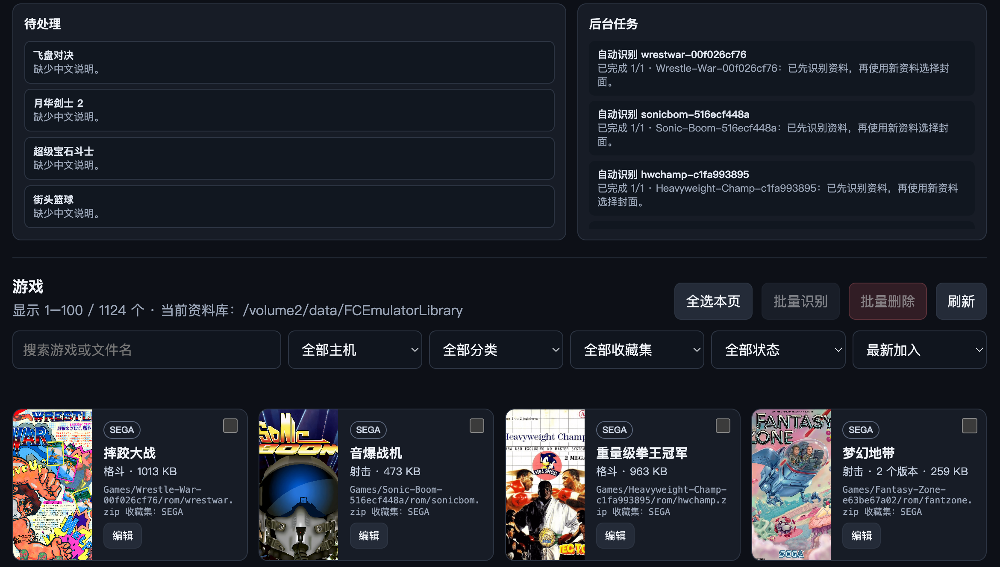

手柄在手，操作顺手。
用蓝牙或 USB 手柄浏览、选择与游玩。左肩打开暂停菜单，右肩开始游戏。

Retro Console经典游戏 · 自在开局CLASSIC GAMES. YOUR WAY.
在沙发上，在书桌前，也在口袋里。
用熟悉的设备，打开自己的游戏收藏。

01 / 打开你的收藏
从电视上的封面，到 Mac 上的整理。
每个界面，都为手里的设备而设计。
为电视距离设计的封面与分类，用手柄浏览自己的游戏收藏。
在 Mac 上导入本地 ROM、编辑资料和整理封面；只在 Mac 上使用，无需先搭服务器。

用电脑或 NAS 管理共享资料库，再连接自己的客户端。已有资料库，就直接添加来源。

02 / 舒服地玩
用蓝牙或 USB 手柄浏览、选择与游玩。左肩打开暂停菜单，右肩开始游戏。
在游戏菜单里存档、读档与继续，把时间留给真正想玩的那一局。
按游戏原始比例利用可用画面，横版与竖版各得其所，熟悉的像素不走样。
03 / 那些熟悉的主机
展开查看主机与准备事项。具体系统范围和游戏兼容性，以你安装的客户端公开版本为准。
NES / Famicom · FDS
SNES / Super Famicom
Mega Drive / Genesis · Mega CD / Sega CD
32X · Master System · Game Gear · SG-1000
Game Boy · Game Boy Color · Game Boy Advance
WonderSwan / Color · Neo Geo Pocket / Color
Atari 2600 · Atari 5200 · Atari 7800
5200、7800 需对应 BIOS。格式与准备方法 ↗PlayStation (PS1)
PC Engine / TurboGrafx-16 · PC Engine CD
Neo Geo · Capcom · SEGA · Konami · Taito
IGS PGM
macOS 1.4.0 下载版另新增 Nintendo 64 支持。
05 / PRESS START
iPhone 与 Apple TV 从 App Store 安装。
Android TV 与 Mac，也准备好了。
口袋里，也能开一局。
iOS 17.0 或更高版本
前往 App Store安装与使用指南在 App Store 查看兼容设备与当前版本。
回到沙发，打开大屏。
通过 Apple TV App Store 安装
前往 App Store安装与使用指南在 App Store 查看兼容设备与当前版本。
给电视盒子添一份乐趣。
Android 10+ · arm64-v8a · v1.5
下载 APK安装与使用指南75126a398ce3aa5b2091d1d0aa57c92d548850984d8ba7ec31d43fec1c5409c9
在桌面，整理也游玩。
macOS 14+ · Apple silicon · v1.4.0
下载 DMG安装与使用指南42b924685874fdf53ba4e0d4126a5dc6f64e63028ad6d3317785c41cc00863d7
 用 iPhone 扫码下载相机扫一扫，直接前往 App Store。
用 iPhone 扫码下载相机扫一扫，直接前往 App Store。
请只导入你有权使用的游戏内容。
安装包不包含商业游戏、BIOS 或私有密钥。
不一定。Mac 可以直接导入和管理本地 ROM，无需 Docker 或 NAS。想在多个设备上访问同一个游戏资料库时，再配置电脑或 NAS 服务器；各端使用方式请查看安装指南。
查看说明 ↗你可以导入自己有权使用的游戏文件。客户端包含项目原创的手柄教学游戏；公开安装包不包含商业 ROM、BIOS 或私有密钥。
查看说明 ↗使用设备兼容的蓝牙或 USB 游戏手柄，先与电视或盒子完成连接，再进入游戏。安装后可用内置手柄教学游戏检查按键。
查看说明 ↗按提示确认机型与文件，再从你有权使用的来源准备对应 BIOS。普通 NES 卡带不需要 FDS BIOS；街机还可能需要母包或共享 BIOS。
查看说明 ↗不应把某一端的新增支持当作所有设备都已支持。系统范围和兼容性以各端公开版本为准；例如当前 macOS 1.4.0 下载版已加入 Nintendo 64。
查看说明 ↗ROM、封面、存档、资料库地址与游玩记录不会发送给开发者。你配置远程资料库后，客户端直接连接你指定的服务器。
查看说明 ↗熟悉的游戏，
留给现在的自己。